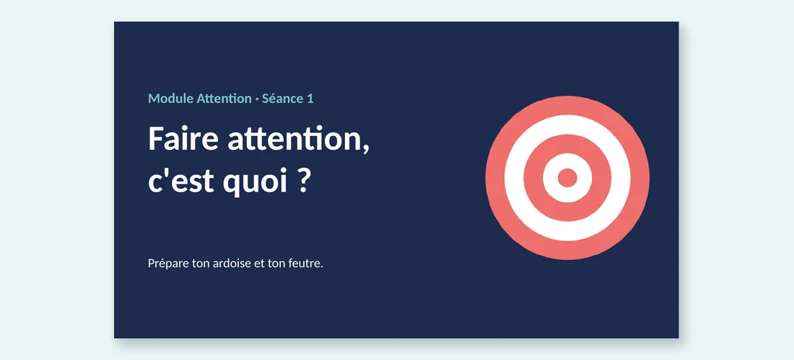
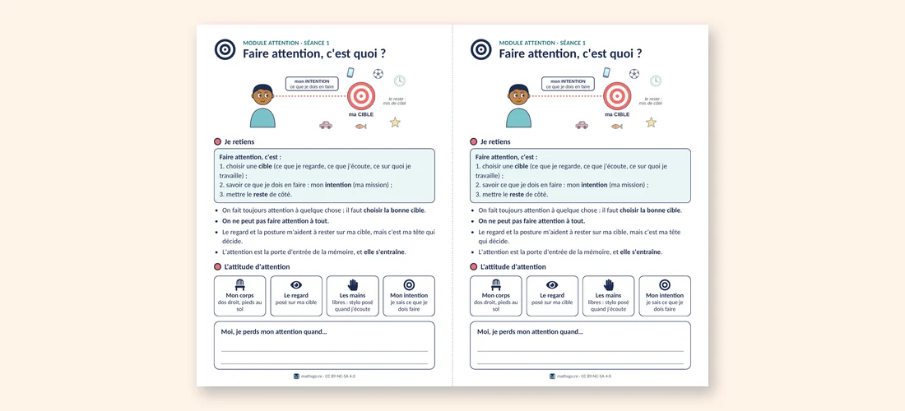
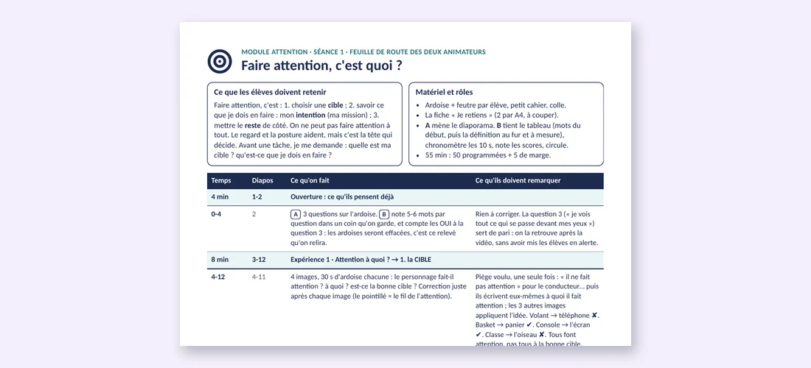
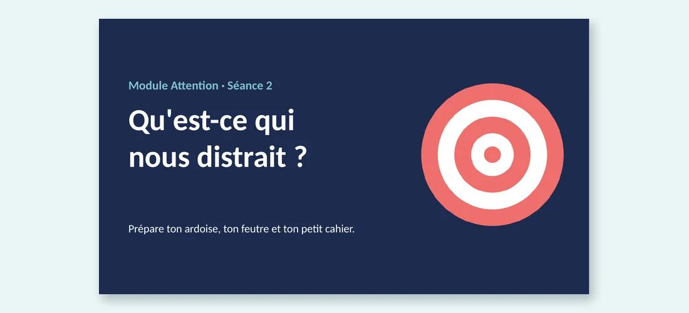
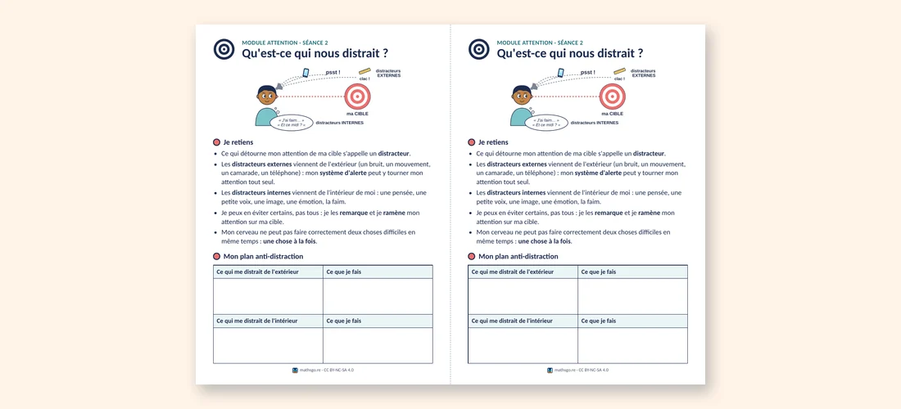
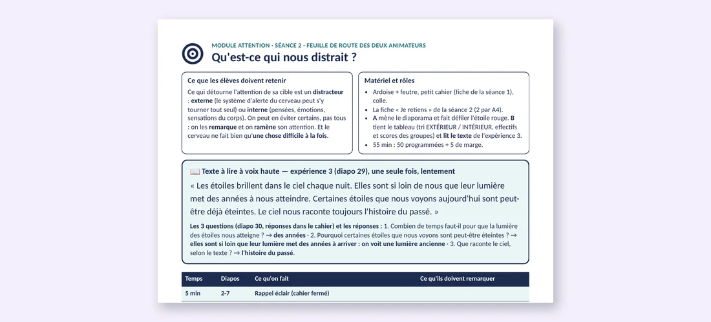

Module Attention
Deux séances de 55 minutes, pensées pour la 4e et la co-animation, pour comprendre ce qu’est l’attention, ce qui nous la fait perdre et comment la garder. Les élèves vivent une expérience, on en tire la notion, puis ils collent une trace courte et claire.
Télécharger tout le module
Séance 1 · Faire attention, c’est quoi ?
55 min · co-animation
Images à analyser (« attention à quoi ? »), deux dessins, vidéo du gorille, vraies consignes de cours, définition en 3 points, attitude d’attention.
La vidéo du gorille (D. Simons, 2010) se lance d’un clic : elle s’ouvre sur YouTube.

La fiche à coller
A5 ×2
La feuille de route
AnimateursSéance 2 · Qu’est-ce qui nous distrait ?
55 min · co-animation
Le diaporama
En ligne
La fiche à coller
A5 ×2
La feuille de route
AnimateursRepères pédagogiques
neurosciencesCe que les élèves retiennent
Faire attention, c’est :
- 1choisir une cible ;
- 2savoir ce que je dois en faire : mon intention ;
- 3mettre le reste de côté.
On ne fait jamais attention « tout court » : on fait attention à quelque chose, pour en faire quelque chose.
Points de vigilance
- Vidéo du gorille : ne rien annoncer avant, et la mettre en pause à « N’avez-vous rien remarqué d’étrange ? », avant les révélations.
- Les deux vidéos externes sont sur YouTube : tester le lien et la connexion avant la séance.
- Les corrections se font diapo par diapo, juste après chaque question.